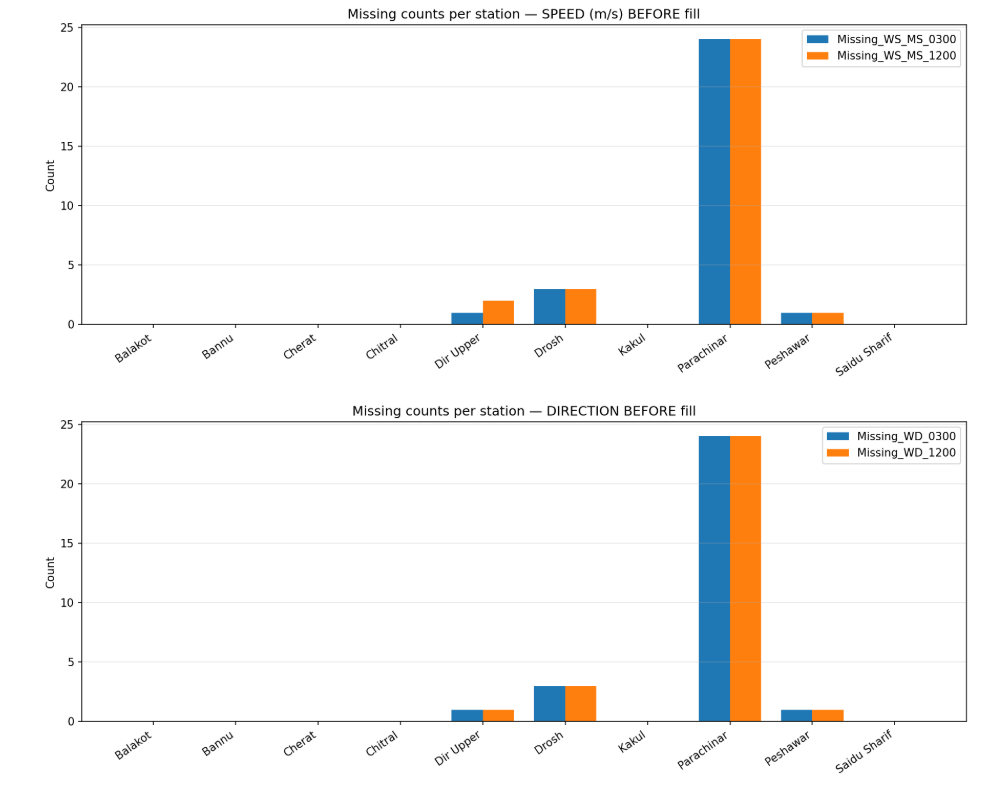
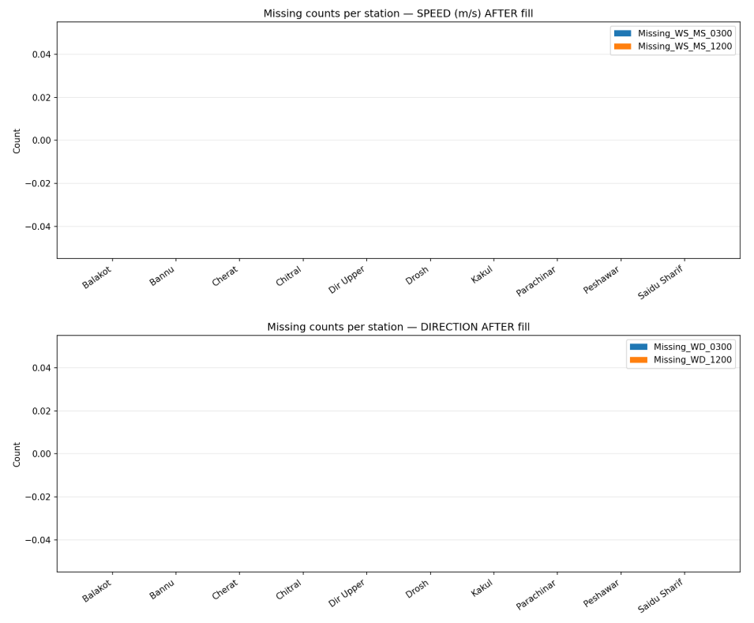
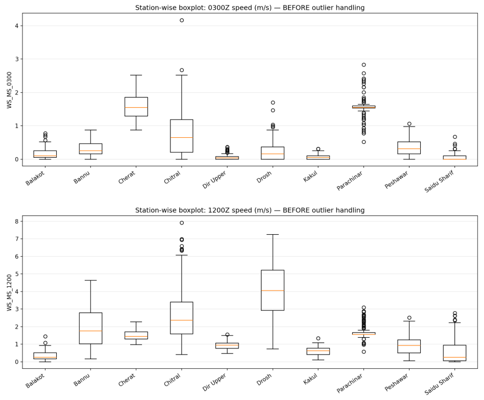
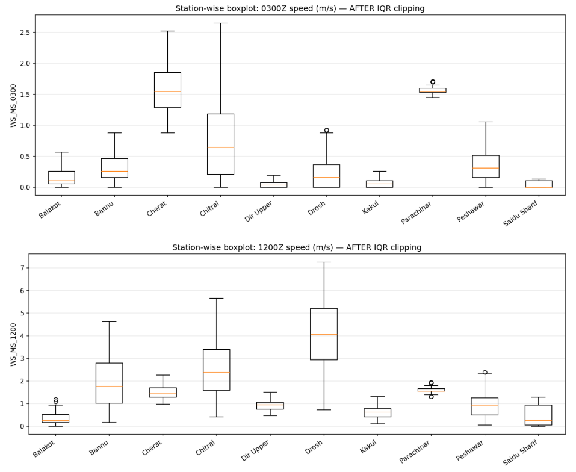
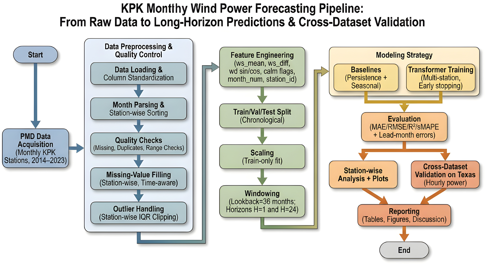

Data Preparation & Pipeline
This page visualizes missing-data handling, outlier processing, and the overall workflow using your provided figures.
Figure Missing data

Figure Missing filled

Figure With outliers

Figure After outliers

Figure Workflow / Flowchart
